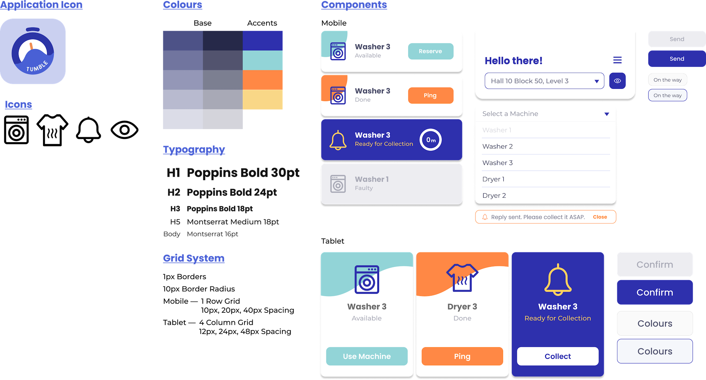

TUMBLE is an application concept (for both mobile and tablet screens) that provides a solution to improve the experience of doing laundry as a student resident living in the campus halls.
This project was completed over the course of a semester in collaboration as a team of students for a university project, where I contributed as an UX designer & researcher, as well as project manager.
The Problem
Students dread doing their laundry while living in campus halls.
Student residents are having a difficult time managing their laundry chores in campus halls as there are limited washer and dryer machines available.
Several other issues were found stemming from this lack of infrastructure such as hinderance in their daily schedules, ruined attire due to faulty machines, and so on.
The Solution
TUMBLE, a multi-platform mobile application, is the proposed solution that aims to tackle issues and elevate the experience of using the laundry facilities as a student living in the campus halls by:
- Providing an overview of the laundry room's status and current usage
- Allowing users to identify and report faulty laundry or dryer machines
- Having users ping one another to collect their laundry on time
- Reminders and push notifications to assist users during their busy schedules
Research
Surveys & Interviews
To really understand what issues and concerns the students are facing, we started by surveying 64 students with a questionnaire to understand their laundry habits and preferences; How often do they do their laundry in a week? Do they use a timer to remind themselves? How often do they encounter faulty machines?
Through the survey participants, we further engaged students to interview them on their personal accounts and experience with using the laundry room as a student resident.
User Journey
Upon collating and analysing the data collected, we've attributed the qualitative insights into actions and pain points taken during the process of doing laundry at the campus halls. This allowed us to draft a user journey map depicting the high and pain points throughout the user's experience, and more importantly highlighting key opportunity areas to resolve.
To further ground our research, we have taken a rough amalgamation from the background information of the users we've studied and produced a user persona with a premise and expectations that are highly relevant to our target users.
How Might We..?
The issue is beyond simply adding more washers and dryers to the laundry room.
What we've found are 4 main concerns from students when it comes to completing their laundry chores on campus halls, such as:
- A more convenient way of knowing the availability of washers and dryers
- A way to identify faulty machines and report issues with their experience
- A system that reduces overall laundry time which fits into their daily schedule
- Assistance in collecting their laundry on time
Ideation
Based on the 4 main User Needs derived from understanding our target users, our team developed 3 main concepts of how the solution could look like:
We quickly conducted simple impression tests based on low-fidelity prototypes to get a rough consensus from our interviewees/target users what pros and cons they would encounter for each of the iterations.
This brought us to decide that the most intuitive and efficient concept would be to feature a platform that operates on the mobile phones of students, as well as a tablet that is placed at the laundry room.
User Testing
2 phases of User Acceptance Testing were conducted for the final iteration of the product, which changed the design of several features and included new ones along the way.
Design System
TUMBLE's design system and brand is described as Organised, Effective and Practical. A clean, flat and soft look is present in the components to ensure a smooth and intuitive user flow. Featuring a tone of voice that is Warm and Composed, it aims to guide users along a difficult and tiresome state of mind typically associated with chores, assuring users along each step of the process.
Final Outcome
The final design includes a multi-platform application that operates on the mobile devices of users as well as a tablet that is stationed at the laundry room.
This user-friendly and easy-to-grasp concept would be able to elevate the main user needs that were identified through research, and cover most edge cases discovered through rigorous user testing.
Beyond that, we've also mapped out possible ideas for launching and rolling out the product such as partnerships or collaborations with the student union, hall councils and facility technicians to ensure the process can be as smooth as possible.
Reflection & Comments
- Conflict & compromises; it was important to hear the concerns and feedback of everyone from the team and learn to find a compromise that works for the better of the product. Too much decision-making coming from one particular member could leave oversight in certain design choices that might lead to issues with the product.
- Communicating ideas; working in a small team with a tight schedule really emphasised how it was crucial as a designer to be able to express your ideas and thoughts on how things should work. There were plenty of times where one of the us had difficulty explaining planned features and screens as it seemed much simpler and straightforward in our minds.
- Inclusivity & team synergy; the team I worked with consisted of 3 designers and 2 engineers, and two of the members were foreigners while the rest of us were local students. I personally found having members with a different background or a different set of skills proved invaluable as they brought new insights and perspectives that would've been overlooked by a group that might think the same.